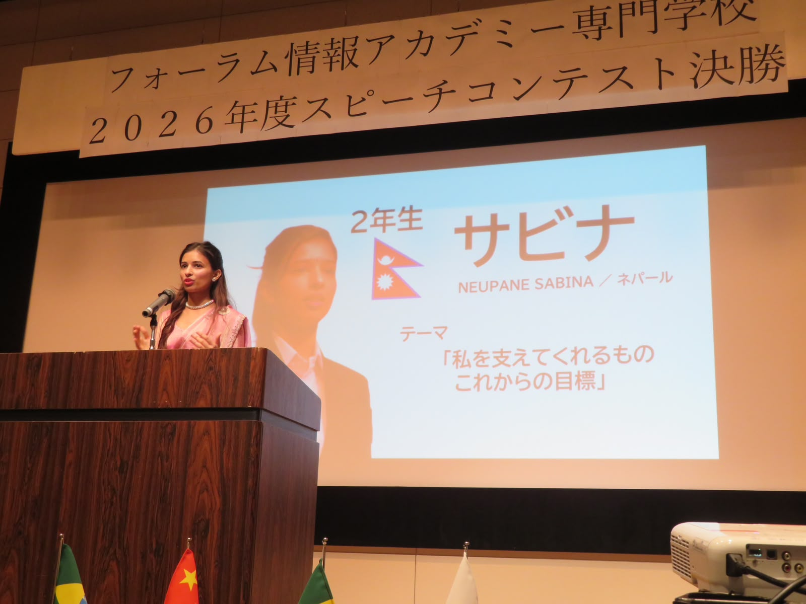

Education in Nepal
Started my higher-education journey in Nepal.
WELCOME TO MY LITTLE WORLD ♡
A Nepali girl building a new chapter in Japan — learning technology, growing with every experience, and working toward a future filled with purpose.
Dream big. Stay kind. Keep growing. ✿
A LITTLE ABOUT ME
My name is Sabina Neupane. I am from Nepal and currently living in Japan. Moving to a new country gave me a fresh beginning, new challenges, and opportunities to discover what I am capable of.
I study Global IT and Cloud Computing. Along the way, I am learning Japanese, exploring technology, working, building projects, and preparing for my professional future.
I believe every small step matters. I am still learning, still growing, and creating my story one day at a time.
“Little by little, day by day, I am becoming the person I dream of being.”
EVERY CHAPTER MADE ME
Started my higher-education journey in Nepal.
Moved to Japan and began a new chapter, including learning the Japanese language.
Studying Global IT and Cloud Computing, building projects, and exploring infrastructure and cloud technologies.
Working toward graduation, a career in IT, and a more independent future.
ALWAYS LEARNING
These are areas I have studied or explored; I am continuing to develop my practical skills.
THINGS I'VE WORKED ON
A responsive website project using HTML, CSS, and JavaScript, including interactive features.
HTML · CSS · JavaScriptA team project with registration, login, dashboard, and data-management functions.
Python · SQL · MySQLA cloud-focused project exploring containerized services and Azure deployment tools.
Azure · Docker · Flask · .NETA team concept connecting people and cultures through food tours, cooking classes, and shared experiences.
Website · Team project · Business ideaA MOMENT I'M PROUD OF

2026 · JAPANESE SPEECH CONTEST
I was honoured to receive the top award at my school's Japanese speech contest. My speech was about the people who support me and the goals I want to pursue.
A reminder that courage, practice, and small efforts can lead to meaningful moments.
MY BIGGEST WHY
I want to become a successful, independent, and strong woman. I want to make my parents proud, support my siblings as they grow, and be a loving sister who brings happiness to her family.
I also hope to build a relationship where love, care, patience, and support go both ways — where we can be each other's comfort and create a peaceful life together.
Most of all, I want to build a beautiful life while remembering to care for myself, too.
THANK YOU FOR BEING HERE
I'm learning, creating, and looking forward to the next chapter.
Find me on GitHub ↗Replace this GitHub link with your own profile URL before publishing.